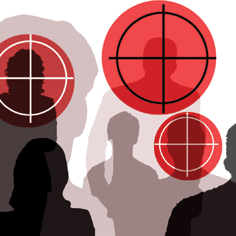

پذيرش > كوچه به كوچه > سخنران خارج از برنامه / نجمه زارع


 سخنران خارج از برنامه / نجمه زارع سخنران خارج از برنامه / نجمه زارع
2 شهریور 1386 - - نسخه قابل چاپ
امروزیکشنبه است، روز شلوغی داشتم. باید ساعت 5 میدان ونک باشم. آخر من آخرین یکشنبه های دوماه یکبار به یکی از انجمن های فعال در امور خیریه می روم. فرم های کمپین و دفترچه ها را هم برمی دارم. شاید بتوانم امضا بگیرم. در راه به این فکر می کردم که چطور باید از مدیر جلسه وقت بگیرم؟ چطور باید تأثیر گذار صحبت کنم؟
چطور می تونم امضاهای بیشتری بگیرم؟ ( آخه حدود هفتاد هشتاد نفری هستند)
در همین فکرها بودم که دیدم نزدیکی های سالن اجتماعات هستم. کمی دیر رسیدم، برنامه شروع شده بود. وارد سالن شدم و جایی نشستم. هرچقدر با چشمهایم به دنبال مدیر جلسه می گشتم، پیدایش نمی کردم.
امروز برنامه ها خیلی فشرده است. با خودم گفتم: با مدیر که هماهنگ نکرده ام، شاید به من وقت ندهد. بالآخره مدیر آمد، ولی یک راست رفت پشت میز. مقاله ها پشت سر هم ارائه می شد. ارایه آخرین مقاله هم شروع شده بود . ( بالآخره بعد از کلی کلنجار رفتن با خودم) از جایم بلند شدم. نزدیک میز مدیر رفتم. سرم را کنار گوشش بردم و گفتم: "ببخشید خانوم امینی، من می تونم یک ربع وقت بگیرم که صحبت کنم؟ " خیلی تعجب کرد. به من گفت:" الآن؟ چرا قبلا هماهنگ نکردی؟ راجع به چی می خوای صحبت کنی؟" (نمی دونستم توی اون وضعیت که خم شدم روی میز، مجبورم یواش هم حرف بزنم، یکی هم داره مقاله اش را ارائه می ده و همه هم دارند به این سمت نگاه می کنند، چه توضیحی باید بدم که هم مدیر توجیه بشه و هم یک زمانی برای صحبت بهم بده. چون او همیشه با موضوعات غیرمرتبط با جلسه مخالفت می کرد.)
خلاصه با همه این اوصاف به ایشان گفتم: "من با یکسری از فعالان اجتماعی حقوق زنان همکاری می کنم که به دنبال تغییر قوانین تبعیض آمیز هستند. کمی هم راجع به حامیان کمپین توضیح دادم و یک صحبت هایی هم در مورد اجتماعی بودن این حرکت کردم. ( وسیاسی نبودن آن) راستش دیگر گردنم درد گرفته بود. یک دفعه خانم امینی صحبتم رو قطع کرد. ابتدا فکر کردم نمی خواهد به من وقت بدهد ولی درعین ناباوری گفت:" آره حتما، چرا که نه؟ ولی فقط یک ربع." خیلی خوشحال شدم. برگشتم و سر جایم نشستم، فرم ها و دفترچه ها را به دوستم دادم تا بین بقیه پخش کند. آخرین مقاله داشت تمام می شد که تازه استرس من شروع شد. چون هم اولین تجربه امضا گرفتن من بود. هم اینکه یک جمع 70، 80 نفری با ایده ها و افکار مختلف در برابرم بودند که من فقط یک ربع وقت داشتم برایشان صحبت کنم، آن هم طوری که فرم ها را امضا کنند. دیگر وقت فکر کردن نبودو من پشت تریبون بودم و میکروفن جلوی دهانم.
نفس عمیقی کشیدم. سعی کردم ذهنم را آزاد کنم تا خودش بهترین جمله ها را انتخاب کند، چون چاره ی دیگری نداشتم. میکروفن رو گرفتم دستم، رفتم وسط جمع.(چون وجه مشترک همه آدم های اون جمع حس نوع دوستی و بشر دوستانه اشان بود، تصمیم گرفتم از این اینجا شروع کنم.)
به آنها گفتم: " صحبتی که من می خواهم بکنم شاید خیلی ربطی به موضوعات جلسه و مقاله های ارائه شده نداشته باشد اما فکر می کنم بی ربط به افکار ما نباشه.
صحبت من راجع به زنان، حقوق زنان، دردهای زنان و خشونت علیه زنان است که آنقدر با زندگی روزمره ما عجین شده که به چشم نمی آید. در حالی که اگر دقیق به آن نگاه کنیم، دردناک بودن آن را می بینیم و حس انسانی و نوع دوستی ما رو تحریک می کنه." خلاصه ادامه دادم و حتی یکسری اجحاف در مسائل روزمره را هم بیان کردم.
اینجا دیگه خیلی راحت تر شده بودم. بین جمع راه می رفتم، به چشم های آدم ها نگاه می کردم. احساس می کردم تأیید حرفهایم در چشمایشان موج می زند. حتی بعضی ها سرشان رو به نشانه تأیید تکان می دادند.
وقتم داشت تمام می شد. فکر کردم بهترین کار در این دقایق باقی مانده، خواندن بیانیه کمپین باشد.
بیانیه را خواندم. وقت تمام شد. فرم ها دست حضار بود. دفترچه مرتب رد و بدل می شد. سکوت فضای سالن را پر کرده بود. من هم بعد از اینکه از حضاربه خاطر گوش کردن حرفهام تشکر کردم ، ساکت شدم. با سوالی در ذهنم: امضا می کنند یا نه؟ چند نفر امضا می کنند؟
بعد از 5 یا 6 دقیقه پچ پچ ها شروع شد. دوستم داشت بعضی از فرم ها را تحویل می گرفت. بعضی ها از سر جایشان بلند شدند. تقریبا نظم جلسه بهم خورده بود. چند نفری به سمت من می آیند. هر کدام سوالاتی داشتند " آیا این کار جواب می ده؟ خطر نداره امضا کنیم؟ می شه با اسم مستعار امضا کنیم؟ تا حالا چند تا امضا جمع شده؟ اگر بخواهیم ما هم فعالیت کنیم، چه کار کنیم؟ راستی نجمه، می شه شماره ات رو بدی ما باهات در تماس باشیم؟" تا آنجایی که می توانستم سعی کردم جواب بدهم. دوستم فرم ها را آورد. باورم نمی شد 69 نفر امضا کرده بودند. بعنوان اولین تجربه برایم خیلی جالب و خیلی هم شیرین بود. حالا من یک کمپینی بودم که خارج از برنامه وارد سخنرانی شده بود و سخنرانی اش هم نتیجه بخش بود. با خوشحالی فرم ها را توی کیفم گذاشتم. تقریبا آدم ها از اطرافم پراکنده شده بودند.
خانم جوانی خیلی آرام به طرفم آمد و گفت: "ببخشید می تونم یه چیزی بگم؟"
گفتم: "حتما، بفرمایید." گفت: "من با تغییر قوانین مخالفم. چون فکر می کنم خدا خودش بهتر می دونه. شاید او چیزهایی رو می دونه که ما نمی دونیم، پس ما فقط باید بپذیریم." نمی دانستم چه جوابی باید بدهم. فکر کردم بهتراست بحث تفسیرهای متفاوت از قرآن و برداشت های غلط از اسلام و یا اینکه بحث های آیت الله بجنوردی و صانعی را پیش بکشم. هرچه راجع به این چیزها می دانستم برایش توضیح دادم. ولی او قانع نشد. راستش احساس کردم اصلا به حرف های من گوش نمی دهد. چون مدام حرف های خودش را تکرار می کرد. دیگر ادامه ندادم. چون نخواستم احساس کند که من حتما می خواهم مجابش کنم که امضا بکند. گفتم هر جور راحتید، پس فقط بیشتر راجع به آن فکر کنید. ساکت شدم و او به من یک لبخند تلخ نشان داد. روسریش را روی سرش مرتب کرد و بند کیفش رو محکم گرفت و رفت.
«آیا واقعا فکر می کند؟»
یک کمپینی
ارسال به
بالاترین
،
توییتر
،
فریندفید
،
فیسبوک
در همين بخش :
 روايت بيست و پنجمين شهريور / نرگس طیبات روايت بيست و پنجمين شهريور / نرگس طیبات
وقتی آتش خاموش شود/فرشته نوبخت
آن گاه که زن شدم / ویژه نامه 8 مارس 1391
چیزی زیر پوست این شهر می جوشد / دلارام علی
گرسنگی / وبلاگ سیب و سرگشتگی
ديگر بخش ها :
طرح یک میلیون امضا
|
مقالات
|
سایت نوشته ها
|
اخبار
|
گزارش كمپين
|
گفت و گو
|
علیه سکوت
|
كوچه به كوچه
|
نامه های شما
|
گزارش ویژه
|
گفتگو با اعضا
|
ویژه سالگرد کمپین
|
تصویر برابری
|
دل آرام علی
|
تریبون
|
مقالات
|
تاریخ شفاهی
|
خارج از چارچوب
|
کتابخانه
|
درباره کمپین
|
کمپین در شهرها
|
کمپین در بند
|
صدای تغییر
|
ویژه 22 خرداد
|
لایحه حمایت از خانواده
|
گالری
|
عشا مومنی
|
امیر یعقوبعلی
|
خدیجه مقدم
|
راحله عسگری زاده و نسیم خسروی
|
پروین اردلان،جلوه جواهری، مریم حسین خواه، ناهید کشاورز
|
زینب پیغمبرزاده
|
سعیده امین، سارا ایمانیان، محبوبه حسین زاده، ناهید کشاورز و همایون نامی
|
احترام شادفر
|
نسیم سرابندی زاده،فاطمه دهدشتی
|
وبلاگ مهمان
|
پرونده خرم آباد
|
دستگیری ها
|
مریم مالک
|
پرستو اللهیاری
|
مهرنوش اعتمادی
|
سمیه رشیدی
|
Other Languages
|
همراهان
|
«فراخوان کمپین ده روز با بهاره هدایت»
| English
|